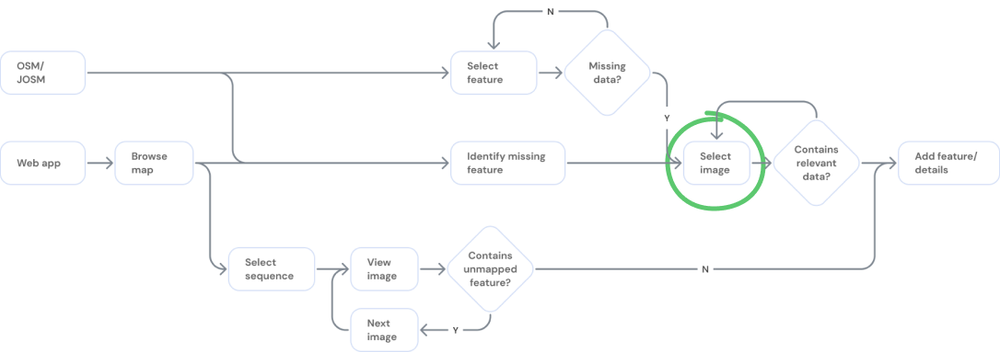
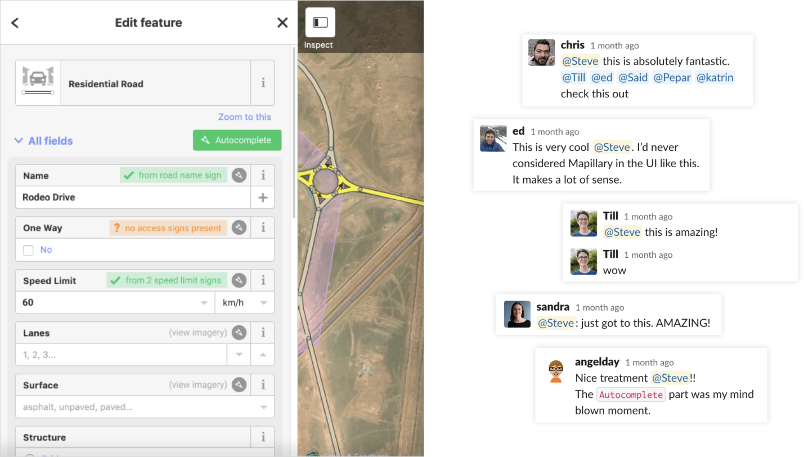

Scaling massive geospatial datasets across tools, users, and platforms
Mapillary hosts billions of street-level images and uses computer vision to extract geospatial data for use cases ranging from OSM editing to AV training. As data volume grew, high-density regions became visually unusable: overlapping points, inconsistent sequences, and heavy load times limited productivity across the ecosystem.
I was asked to define a strategic approach to improving data legibility and access across web, desktop, and partner platforms — without removing data or breaking existing workflows.

The Challenge
Key constraints shaped the problem:
- Different user types had conflicting needs (OSM editors, researchers, AV teams, hobbyists).
- Huge variance in data quality made “simple cleanup” approaches unreliable.
- Platform fragmentation meant any solution needed to scale across Mapillary web, JOSM, and custom integrations.
- Internal pressure to “mapmatch everything” risked hiding valid off-road or non-highway imagery.
This was not a UI redesign — it was a systems-level problem where UX, data structures, and machine-learning constraints intersected.
Understanding Users & Workflows
Mapillary lacked a clear view of who used its data and how. I led a mixed-method discovery effort combining:
- Qualitative interviews with OSM mappers, power users, and internal teams.
- Workflow observation across desktop, web, and editing tools.
- Custom analytics tools built on the public API to identify usage patterns and hotspots.
Outputs included a set of personas and cross-platform workflows that revealed where congestion, loading issues, and navigation breakdowns occurred.
Exploration & Rapid Prototyping
I prototyped solutions directly using Mapillary JS and Mapbox JS with real data. This allowed us to test approaches that balanced technical feasibility, ML limitations, and varied user expectations.
Three promising solution categories emerged:
- Meta Sequences: Generate clean navigable paths without hiding raw data.
- Cross-platform filtering: Let users control density by surfacing only relevant photos, objects, or signs.
- Workflow automation: Automatically surface images relevant to high-value editing tasks (e.g., missing speed limits).
Meta Sequences
Meta Sequences provided the most scalable long-term solution: create canonical paths along roads, then associate nearby imagery while letting users prioritize recency, metadata, or object detections.
This approach preserved data integrity while dramatically improving map readability — but required significant engineering investment to productionize.
Data Filtering
To deliver immediate value, I designed and tested filtering controls compatible with Mapillary Web, the Mapillary API, and JOSM’s extremely constrained plugin UI.

Key contributions included:
- Contextual filtering based on objects present in the visible map area.
- Type-based grouping to manage hundreds of road-sign variants.
- Prototype-driven validation with OSM editors using real production data.
Automating Workflows
While out of scope for immediate release, I identified an opportunity to reduce cognitive load by detecting missing map data and auto-surfacing nearby evidence — effectively reversing the typical manual search workflow.
This concept seeded a new direction internally: targeted, single-purpose tools built on Mapillary’s data instead of generic map browsing.
Impact
- Established Mapillary’s first multi-platform understanding of user workflows and data pain points.
- Shifted internal strategy away from “data cleanup” toward scalable, user-centered systems solutions.
- Introduced Meta Sequences — later incorporated into ongoing roadmap discussions as Mapillary transitioned under Meta.
- Delivered filtering improvements that influenced design across Mapillary Web, API consumers, and JOSM.
- Set the foundation for automated map-editing workflows that informed future product experiments.
Most importantly, the work reframed Mapillary’s core UX problem: from “too much data” to “how do we make big geospatial data usable, navigable, and intelligent across any platform.”